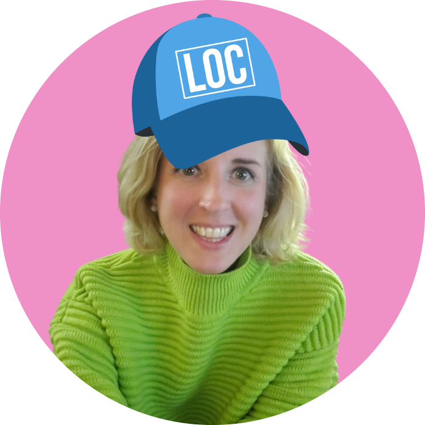
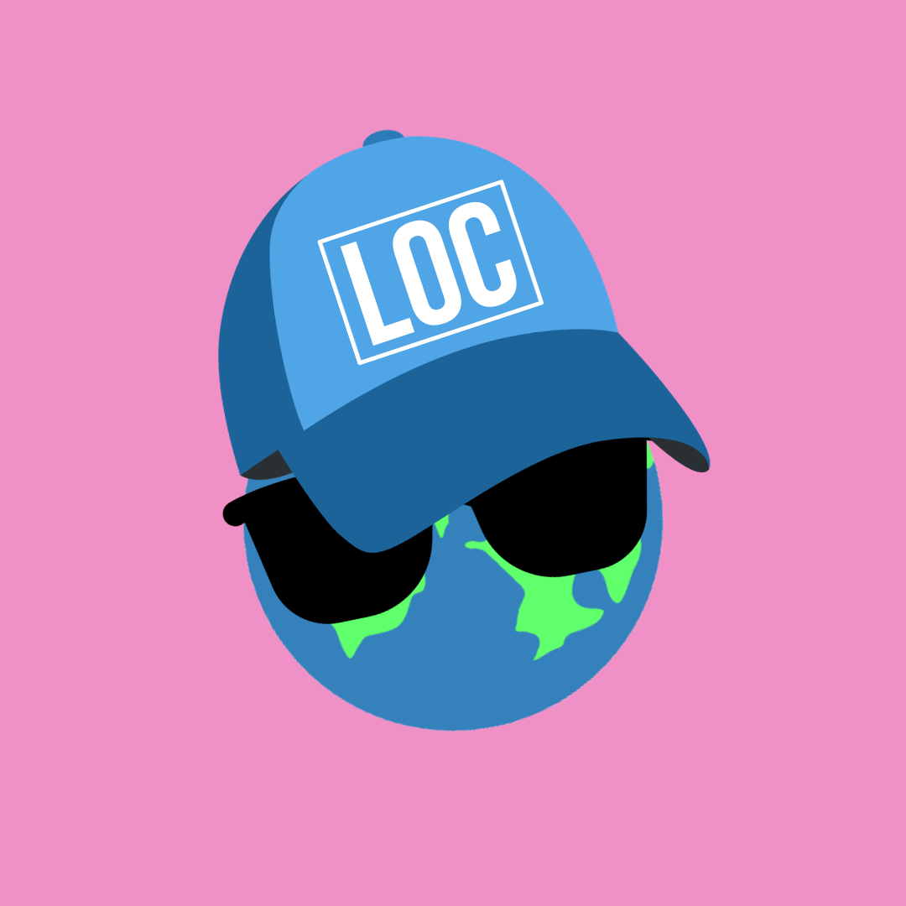

Acerca de nosotros
Conoce a la diseñadora del curso y a la organización que hace posible este curso de acceso abierto sobre localización web.
Acerca de la diseñadora del curso

Alaina Brandt es traductora de inglés y español, educadora y desarrolladora de tecnología multilingüe. Es fundadora y formadora principal de LocEssentials, una consultoría que ofrece cursos de acceso abierto sobre gestión de la traducción y la localización.
Brandt tiene una maestría en Lengua, Literatura y Traducción por la Universidad de Wisconsin-Milwaukee, así como certificados de educación profesional del MIT en inteligencia artificial generativa y transformación digital, ciencia de datos y aprendizaje automático, y programación web.
Ha formado parte de los comités ejecutivos de la American Translators Association y del comité técnico ASTM F43, que redacta y mantiene normas internacionales sobre servicios y productos lingüísticos. Ha impartido cursos sobre traducción y localización en universidades de México, China y los Estados Unidos.
Acerca de LocEssentials
LocEssentials es una consultoría que ofrece cursos de acceso abierto sobre gestión de la traducción y la localización, junto con servicios que complementan los cursos, como asesoría personalizada, evaluaciones con retroalimentación completa sobre trabajo y consultoría.
La especialización de LocEssentials abarca la traducción y la localización, la gestión de la calidad, la terminología y la tecnología. También se desarrollan soluciones adaptadas a las necesidades específicas de cada organización.
